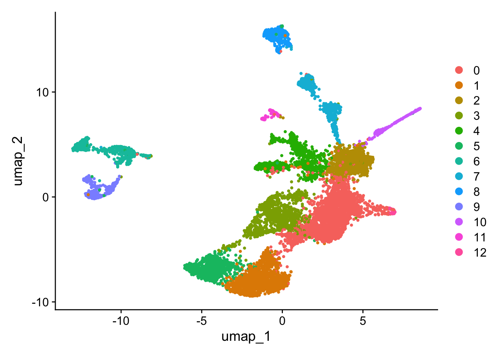

HumanAneurysm
A.DeMartin
2024-03-19
Last updated: 2024-04-29
Checks: 5 2
Knit directory: HumanAneurysm/
This reproducible R Markdown analysis was created with workflowr (version 1.7.1). The Checks tab describes the reproducibility checks that were applied when the results were created. The Past versions tab lists the development history.
The R Markdown is untracked by Git. To know which version of the R
Markdown file created these results, you’ll want to first commit it to
the Git repo. If you’re still working on the analysis, you can ignore
this warning. When you’re finished, you can run
wflow_publish to commit the R Markdown file and build the
HTML.
Great job! The global environment was empty. Objects defined in the global environment can affect the analysis in your R Markdown file in unknown ways. For reproduciblity it’s best to always run the code in an empty environment.
The command set.seed(20240319) was run prior to running
the code in the R Markdown file. Setting a seed ensures that any results
that rely on randomness, e.g. subsampling or permutations, are
reproducible.
Great job! Recording the operating system, R version, and package versions is critical for reproducibility.
Nice! There were no cached chunks for this analysis, so you can be confident that you successfully produced the results during this run.
Using absolute paths to the files within your workflowr project makes it difficult for you and others to run your code on a different machine. Change the absolute path(s) below to the suggested relative path(s) to make your code more reproducible.
| absolute | relative |
|---|---|
| /Users/immbio/Desktop/Project/Angelina/HumanAneurysm/data/AneurysmDataMarch2024/ | data/AneurysmDataMarch2024 |
| /Users/immbio/Desktop/Project/Angelina/HumanAneurysm/data/AneurysmDataApril2024// | data/AneurysmDataApril2024 |
| /Users/immbio/Desktop/Project/Angelina/HumanAneurysm/data/Aneuryms_allmerged_seurat.rds | data/Aneuryms_allmerged_seurat.rds |
Great! You are using Git for version control. Tracking code development and connecting the code version to the results is critical for reproducibility.
The results in this page were generated with repository version 8e1e9dc. See the Past versions tab to see a history of the changes made to the R Markdown and HTML files.
Note that you need to be careful to ensure that all relevant files for
the analysis have been committed to Git prior to generating the results
(you can use wflow_publish or
wflow_git_commit). workflowr only checks the R Markdown
file, but you know if there are other scripts or data files that it
depends on. Below is the status of the Git repository when the results
were generated:
Ignored files:
Ignored: .DS_Store
Ignored: .Rhistory
Ignored: .Rproj.user/
Ignored: analysis/.Rhistory
Ignored: analysis/figure/
Ignored: data/.DS_Store
Untracked files:
Untracked: analysis/HumanAneurysm.Rmd
Untracked: analysis/QualityControl.Rmd
Untracked: data/Aneuryms_allmerged_seurat.rds
Untracked: data/AneurysmDataApril2024/
Untracked: data/AneurysmDataMarch2024/
Untracked: data/excluded samples/
Note that any generated files, e.g. HTML, png, CSS, etc., are not included in this status report because it is ok for generated content to have uncommitted changes.
There are no past versions. Publish this analysis with
wflow_publish() to start tracking its development.
load packages
##############################start pre-processing##############################
load files and merge
### load and merge all
basedir <- "/Users/immbio/Desktop/Project/Angelina/HumanAneurysm/data/AneurysmDataMarch2024/"
fileNamList <- list.files(path = basedir)
for(i in 1:length(fileNamList)){
seuratS <- readRDS(paste0(basedir, fileNamList[i]))
if(exists("seuratM")){
seuratM <- merge(x = seuratM, y = seuratS)
}else{
seuratM <- seuratS
}
}
remove(seuratS)
table(seuratM$dataset)
table(seuratM$orig.ident)
### load and merge all
basedir <- "/Users/immbio/Desktop/Project/Angelina/HumanAneurysm/data/AneurysmDataApril2024//"
fileNamList <- list.files(path = basedir)
for(i in 1:length(fileNamList)){
seuratS <- readRDS(paste0(basedir, fileNamList[i]))
if(exists("seuratM")){
seuratM <- merge(x = seuratM, y = seuratS)
}else{
seuratM <- seuratS
}
}
remove(seuratS)
table(seuratM$dataset)
table(seuratM$orig.ident)
#rerun seurat
seuratM <- NormalizeData (object = seuratM)
seuratM <- FindVariableFeatures(object = seuratM)
seuratM <- ScaleData(object = seuratM, verbose = TRUE)
seuratM <- RunPCA(object=seuratM, npcs = 30, verbose = FALSE)
seuratM <- RunTSNE(object=seuratM, reduction="pca", dims = 1:20)
seuratM <- RunUMAP(object=seuratM, reduction="pca", dims = 1:20)
seuratM <- FindNeighbors(object = seuratM, reduction = "pca", dims= 1:20)
res <- c(0.25, 0.6, 0.8, 0.4)
for (i in 1:length(res)) {
seuratM <- FindClusters(object = seuratM, resolution = res[i], random.seed = 1234)
}### save seurat object
saveRDS(seuratM, file="/Users/immbio/Desktop/Project/Angelina/HumanAneurysm/data/Aneuryms_allmerged_seurat.rds")##############################end pre-processing##############################
load file
##load merged file
fileNam <- "/Users/immbio/Desktop/Project/Angelina/HumanAneurysm/data/Aneuryms_allmerged_seurat.rds"
seuratM <- readRDS(fileNam)
table(seuratM$dataset)
344261_07-7_20240219_Hu_nucseq_control_01 344261_08-8_20240219_Hu_nucseq_UIA_04
598 398
344261_09-9_20240219_Hu_nucseq_UIA_07 348751_2-7_20240326_Hu_nucseq_tArm_ctrl_1
1132 1081
348751_3-8_20240326_Hu_nucseq_tArm_ctrl_2 348751_4-9_20240326_Hu_nucseq_UIA_001
798 351 table(seuratM$RNA_snn_res.0.25)
0 1 2 3 4 5 6 7
1542 1045 619 396 319 203 180 54 table(seuratM$orig.ident)
4358 ### add any type of metadata
### patient
control_01 <- c("344261_07-7_20240219_Hu_nucseq_control_01")
UIA_04 <- c("344261_08-8_20240219_Hu_nucseq_UIA_04")
UIA_07 <- c("344261_09-9_20240219_Hu_nucseq_UIA_07")
tArm_ctrl_1 <- c("348751_2-7_20240326_Hu_nucseq_tArm_ctrl_1")
tArm_ctrl_2 <- c("348751_3-8_20240326_Hu_nucseq_tArm_ctrl_2")
UIA_001 <- c("348751_4-9_20240326_Hu_nucseq_UIA_001")
seuratM$patient <- "pat_nr"
seuratM$patient[which(seuratM$dataset %in% control_01)] <- "control_01"
seuratM$patient[which(seuratM$dataset %in% UIA_04)] <- "UIA_04"
seuratM$patient[which(seuratM$dataset %in% UIA_07)] <- "UIA_07"
seuratM$patient[which(seuratM$dataset %in% tArm_ctrl_1)] <- "tArm_ctrl_1"
seuratM$patient[which(seuratM$dataset %in% tArm_ctrl_2)] <- "tArm_ctrl_2"
seuratM$patient[which(seuratM$dataset %in% UIA_001)] <- "UIA_001"
table(seuratM$patient)
control_01 tArm_ctrl_1 tArm_ctrl_2 UIA_001 UIA_04 UIA_07
598 1081 798 351 398 1132 ### batch
batch1 <- c("344261_07-7_20240219_Hu_nucseq_control_01","344261_08-8_20240219_Hu_nucseq_UIA_04","344261_09-9_20240219_Hu_nucseq_UIA_07")
batch2 <- c("348751_2-7_20240326_Hu_nucseq_tArm_ctrl_1","348751_3-8_20240326_Hu_nucseq_tArm_ctrl_2","348751_4-9_20240326_Hu_nucseq_UIA_001")
seuratM$batch <- "batch"
seuratM$batch[which(seuratM$dataset %in% batch1)] <- "batch1"
seuratM$batch[which(seuratM$dataset %in% batch2)] <- "batch2"
table(seuratM$batch)
batch1 batch2
2128 2230 ##set color vectors
col <- c("#202547","#BE3144","#727077","#355C7D","#779d8d","#dfc27d","#f4a582","#B45B5C")
names(col) <- unique(seuratM$RNA_snn_res.0.25)
colpat <- c("#202547","#BE3144","#727077","#779d8d","#dfc27d","#f4a582")
names(colpat) <- unique(seuratM$patient)plot umaps
Idents(seuratM) <- seuratM$RNA_snn_res.0.25
DimPlot(seuratM, reduction = "umap", pt.size = 0.8, cols = col) 
Idents(seuratM) <- seuratM$patient
DimPlot(seuratM, reduction = "umap", pt.size = 0.8, cols = colpat) 
calculate marker genes
##cluster marker
Idents(seuratM) <- seuratM$RNA_snn_res.0.25
markerGenes <- FindAllMarkers(seuratM, only.pos=T) %>%
dplyr::filter(p_val_adj < 0.01)
##DE genes datasets
Idents(seuratM) <- seuratM$dataset
levels(seuratM)
DEgenes <- FindAllMarkers(seuratM, only.pos=T) %>%
dplyr::filter(p_val_adj < 0.01)plot features
FeaturePlot(seuratM, features = "ENSG00000133392.MYH11", pt.size = 1, cols = c("lightgrey", "#BE3144"), raster = FALSE)
FeaturePlot(seuratM, features = "ENSG00000107796.ACTA2", pt.size = 1, cols = c("lightgrey", "#BE3144"), raster = FALSE)
FeaturePlot(seuratM, features = "ENSG00000076706.MCAM", pt.size = 1, cols = c("lightgrey", "#BE3144"), raster = FALSE)
FeaturePlot(seuratM, features = "ENSG00000105835.NAMPT", pt.size = 1, cols = c("lightgrey", "#BE3144"), raster = FALSE)
FeaturePlot(seuratM, features = "ENSG00000077942.FBLN1", pt.size = 1, cols = c("lightgrey", "#BE3144"), raster = FALSE)
FeaturePlot(seuratM, features = "ENSG00000188257.PLA2G2A", pt.size = 1, cols = c("lightgrey", "#BE3144"), raster = FALSE)
FeaturePlot(seuratM, features = "ENSG00000125740.FOSB", pt.size = 1, cols = c("lightgrey", "#BE3144"), raster = FALSE)
FeaturePlot(seuratM, features = "ENSG00000170345.FOS", pt.size = 1, cols = c("lightgrey", "#BE3144"), raster = FALSE)
FeaturePlot(seuratM, features = "ENSG00000137801.THBS1", pt.size = 1, cols = c("lightgrey", "#BE3144"), raster = FALSE)
FeaturePlot(seuratM, features = "ENSG00000154734.ADAMTS1", pt.size = 1, cols = c("lightgrey", "#BE3144"), raster = FALSE)
FeaturePlot(seuratM, features = "ENSG00000123358.NR4A1", pt.size = 1, cols = c("lightgrey", "#BE3144"), raster = FALSE)
FeaturePlot(seuratM, features = "ENSG00000110799.VWF", pt.size = 1, cols = c("lightgrey", "#BE3144"), raster = FALSE)
FeaturePlot(seuratM, features = "ENSG00000261371.PECAM1", pt.size = 1, cols = c("lightgrey", "#BE3144"), raster = FALSE)
FeaturePlot(seuratM, features = "ENSG00000179915.NRXN1", pt.size = 1, cols = c("lightgrey", "#BE3144"), raster = FALSE) 
FeaturePlot(seuratM, features = "ENSG00000130294.KIF1A", pt.size = 1, cols = c("lightgrey", "#BE3144"), raster = FALSE) 
FeaturePlot(seuratM, features = "ENSG00000196091.MYBPC1", pt.size = 1, cols = c("lightgrey", "#BE3144"), raster = FALSE) 
FeaturePlot(seuratM, features = "ENSG00000092054.MYH7", pt.size = 1, cols = c("lightgrey", "#BE3144"), raster = FALSE) 
FeaturePlot(seuratM, features = "ENSG00000119535.CSF3R", pt.size = 1, cols = c("lightgrey", "#BE3144"), raster = FALSE) 
FeaturePlot(seuratM, features = "ENSG00000173391.OLR1", pt.size = 1, cols = c("lightgrey", "#BE3144"), raster = FALSE)
FeaturePlot(seuratM, features = "ENSG00000211451.GNRHR2", pt.size = 1, cols = c("lightgrey", "#BE3144"), raster = FALSE) 
FeaturePlot(seuratM, features = "ENSG00000142798.HSPG2", pt.size = 1, cols = c("lightgrey", "#BE3144"), raster = FALSE)
FeaturePlot(seuratM, features = "ENSG00000100154.TTC28", pt.size = 1, cols = c("lightgrey", "#BE3144"), raster = FALSE) 
FeaturePlot(seuratM, features = "ENSG00000168806.LCMT2", pt.size = 1, cols = c("lightgrey", "#BE3144"), raster = FALSE)
FeaturePlot(seuratM, features = "ENSG00000114861.FOXP1", pt.size = 1, cols = c("lightgrey", "#BE3144"), raster = FALSE) 
integrate over batches
seuratM.list <- SplitObject(object = seuratM, split.by = "batch")
for (i in 1:length(x = seuratM.list)) {
seuratM.list[[i]] <- NormalizeData(object = seuratM.list[[i]],
verbose = FALSE)
seuratM.list[[i]] <- FindVariableFeatures(object = seuratM.list[[i]],
selection.method = "vst", nfeatures = 2000, verbose = FALSE)
}
seuratM.anchors <- FindIntegrationAnchors(object.list = seuratM.list, dims = 1:10,
k.filter = 200)
seuratM.int <- IntegrateData(anchorset = seuratM.anchors, dims = 1:10)
DefaultAssay(object = seuratM.int) <- "integrated"
# rerun seurat
seuratM.int <- ScaleData(object = seuratM.int, verbose = FALSE,
features = rownames(seuratM.int))
seuratM.int <- RunPCA(object = seuratM.int, npcs = 20, verbose = FALSE)
#seuratM.int <- RunTSNE(object = seuratM.int, reduction = "pca", dims = 1:10)
seuratM.int <- RunUMAP(object = seuratM.int, reduction = "pca", dims = 1:10)
seuratM.int <- FindNeighbors(object = seuratM.int, reduction = "pca", dims = 1:10)
res <- c(0.25,0.6,0.4,0.8)
for(i in 1:length(res)){
seuratM.int <- FindClusters(object = seuratM.int, resolution = res[i],
random.seed = 1234)
}Modularity Optimizer version 1.3.0 by Ludo Waltman and Nees Jan van Eck
Number of nodes: 4358
Number of edges: 151103
Running Louvain algorithm...
Maximum modularity in 10 random starts: 0.9277
Number of communities: 11
Elapsed time: 0 seconds
Modularity Optimizer version 1.3.0 by Ludo Waltman and Nees Jan van Eck
Number of nodes: 4358
Number of edges: 151103
Running Louvain algorithm...
Maximum modularity in 10 random starts: 0.8703
Number of communities: 13
Elapsed time: 0 seconds
Modularity Optimizer version 1.3.0 by Ludo Waltman and Nees Jan van Eck
Number of nodes: 4358
Number of edges: 151103
Running Louvain algorithm...
Maximum modularity in 10 random starts: 0.9015
Number of communities: 12
Elapsed time: 0 seconds
Modularity Optimizer version 1.3.0 by Ludo Waltman and Nees Jan van Eck
Number of nodes: 4358
Number of edges: 151103
Running Louvain algorithm...
Maximum modularity in 10 random starts: 0.8494
Number of communities: 16
Elapsed time: 0 secondsDefaultAssay(object = seuratM.int) <- "RNA"##set color vectors
colint <- c("#202547","#BE3144","#727077","#355C7D","#779d8d","#dfc27d","#f4a582","#B45B5C")
names(colint) <- unique(seuratM.int$RNA_snn_res.0.25)
colbatch <- c("#202547","#BE3144")
names(colbatch) <- unique(seuratM.int$batch)visualize integrated data
Idents(seuratM.int) <- seuratM.int$RNA_snn_res.0.25
DimPlot(seuratM.int, reduction="umap", cols = colint)
Idents(seuratM.int) <- seuratM.int$batch
DimPlot(seuratM.int, reduction="umap", cols = colbatch)
Idents(seuratM.int) <- seuratM.int$patient
DimPlot(seuratM.int, reduction="umap", cols = colpat)
session info
date()[1] "Mon Apr 29 19:27:17 2024"sessionInfo()R version 4.2.3 (2023-03-15)
Platform: x86_64-apple-darwin17.0 (64-bit)
Running under: macOS Big Sur ... 10.16
Matrix products: default
BLAS: /Library/Frameworks/R.framework/Versions/4.2/Resources/lib/libRblas.0.dylib
LAPACK: /Library/Frameworks/R.framework/Versions/4.2/Resources/lib/libRlapack.dylib
locale:
[1] en_US.UTF-8/en_US.UTF-8/en_US.UTF-8/C/en_US.UTF-8/en_US.UTF-8
attached base packages:
[1] grid stats4 stats graphics grDevices utils datasets methods base
other attached packages:
[1] NCmisc_1.2.0 VennDiagram_1.7.3 futile.logger_1.4.3
[4] ggupset_0.3.0 gridExtra_2.3 DOSE_3.24.2
[7] enrichplot_1.18.4 msigdbr_7.5.1 org.Hs.eg.db_3.16.0
[10] AnnotationDbi_1.60.2 clusterProfiler_4.6.2 multtest_2.54.0
[13] metap_1.9 scater_1.26.1 scuttle_1.8.4
[16] destiny_3.12.0 circlize_0.4.16 muscat_1.12.1
[19] viridis_0.6.5 viridisLite_0.4.2 lubridate_1.9.3
[22] forcats_1.0.0 stringr_1.5.1 purrr_1.0.2
[25] readr_2.1.5 tidyr_1.3.1 tibble_3.2.1
[28] tidyverse_2.0.0 dplyr_1.1.4 SingleCellExperiment_1.20.1
[31] SummarizedExperiment_1.28.0 Biobase_2.58.0 GenomicRanges_1.50.2
[34] GenomeInfoDb_1.34.9 IRanges_2.32.0 S4Vectors_0.36.2
[37] BiocGenerics_0.44.0 MatrixGenerics_1.10.0 matrixStats_1.2.0
[40] pheatmap_1.0.12 ggpubr_0.6.0 ggplot2_3.5.0
[43] Seurat_5.0.1 SeuratObject_5.0.1 sp_2.1-3
[46] runSeurat3_0.1.0 ExploreSCdataSeurat3_0.1.0
loaded via a namespace (and not attached):
[1] TMB_1.9.10 graphlayouts_1.1.0 pbapply_1.7-2
[4] lattice_0.22-5 vctrs_0.6.5 mgcv_1.9-1
[7] blob_1.2.4 survival_3.5-8 spatstat.data_3.0-4
[10] later_1.3.2 nloptr_2.0.3 DBI_1.2.2
[13] uwot_0.1.16 zlibbioc_1.44.0 pcaMethods_1.90.0
[16] htmlwidgets_1.6.4 mvtnorm_1.2-4 GlobalOptions_0.1.2
[19] future_1.33.1 laeken_0.5.3 leiden_0.4.3.1
[22] parallel_4.2.3 pbkrtest_0.5.2 irlba_2.3.5.1
[25] DEoptimR_1.1-3 tidygraph_1.3.0 Rcpp_1.0.12
[28] KernSmooth_2.23-22 promises_1.2.1 DelayedArray_0.24.0
[31] limma_3.54.2 RSpectra_0.16-1 fs_1.6.3
[34] fastmatch_1.1-4 mnormt_2.1.1 RhpcBLASctl_0.23-42
[37] ranger_0.16.0 digest_0.6.34 png_0.1-8
[40] sctransform_0.4.1 scatterpie_0.2.1 cowplot_1.1.3
[43] ggraph_2.1.0 pkgconfig_2.0.3 GO.db_3.16.0
[46] spatstat.random_3.2-2 DelayedMatrixStats_1.20.0 ggbeeswarm_0.7.2
[49] iterators_1.0.14 minqa_1.2.6 reticulate_1.35.0
[52] spam_2.10-0 beeswarm_0.4.0 GetoptLong_1.0.5
[55] xfun_0.42 bslib_0.6.1 zoo_1.8-12
[58] tidyselect_1.2.0 reshape2_1.4.4 ica_1.0-3
[61] gson_0.1.0 rlang_1.1.3 hexbin_1.28.3
[64] jquerylib_0.1.4 glue_1.7.0 RColorBrewer_1.1-3
[67] variancePartition_1.28.9 lambda.r_1.2.4 ggsignif_0.6.4
[70] workflowr_1.7.1 DESeq2_1.38.3 labeling_0.4.3
[73] mutoss_0.1-13 httpuv_1.6.14 class_7.3-22
[76] BiocNeighbors_1.16.0 TH.data_1.1-2 annotate_1.76.0
[79] jsonlite_1.8.8 XVector_0.38.0 bit_4.0.5
[82] mime_0.12 gplots_3.1.3.1 stringi_1.8.3
[85] spatstat.sparse_3.0-3 scattermore_1.2 spatstat.explore_3.2-6
[88] rbibutils_2.2.16 yulab.utils_0.1.4 bitops_1.0-7
[91] cli_3.6.2 Rdpack_2.6 RSQLite_2.3.5
[94] data.table_1.15.0 timechange_0.3.0 rstudioapi_0.15.0
[97] git2r_0.33.0 nlme_3.1-164 qvalue_2.30.0
[100] locfit_1.5-9.8 listenv_0.9.1 ggthemes_5.1.0
[103] miniUI_0.1.1.1 gridGraphics_0.5-1 TTR_0.24.4
[106] lifecycle_1.0.4 munsell_0.5.0 caTools_1.18.2
[109] codetools_0.2-19 vipor_0.4.7 lmtest_0.9-40
[112] xtable_1.8-4 ROCR_1.0-11 formatR_1.14
[115] scatterplot3d_0.3-44 abind_1.4-5 farver_2.1.1
[118] parallelly_1.37.0 RANN_2.6.1 aplot_0.2.2
[121] ggtree_3.6.2 RcppAnnoy_0.0.22 goftest_1.2-3
[124] patchwork_1.2.0 futile.options_1.0.1 cluster_2.1.6
[127] future.apply_1.11.1 Matrix_1.6-5 tidytree_0.4.6
[130] ellipsis_0.3.2 prettyunits_1.2.0 ggridges_0.5.6
[133] shinydashboard_0.7.2 igraph_1.6.0 RcppEigen_0.3.3.9.4
[136] fgsea_1.24.0 TFisher_0.2.0 lmerTest_3.1-3
[139] VIM_6.2.2 glmmTMB_1.1.8 spatstat.utils_3.0-4
[142] htmltools_0.5.7 yaml_2.3.8 utf8_1.2.4
[145] plotly_4.10.4 XML_3.99-0.16.1 e1071_1.7-14
[148] withr_3.0.0 fitdistrplus_1.1-11 BiocParallel_1.32.6
[151] bit64_4.0.5 multcomp_1.4-25 foreach_1.5.2
[154] robustbase_0.99-2 Biostrings_2.66.0 progressr_0.14.0
[157] GOSemSim_2.24.0 rsvd_1.0.5 ScaledMatrix_1.6.0
[160] memoise_2.0.1 evaluate_0.23 geneplotter_1.76.0
[163] tzdb_0.4.0 curl_5.2.0 qqconf_1.3.2
[166] fansi_1.0.6 fastDummies_1.7.3 highr_0.10
[169] xts_0.13.2 tensor_1.5 edgeR_3.40.2
[172] aod_1.3.3 cachem_1.0.8 remaCor_0.0.18
[175] deldir_2.0-2 HDO.db_0.99.1 babelgene_22.9
[178] rjson_0.2.21 rstatix_0.7.2 ggrepel_0.9.5
[181] clue_0.3-65 rprojroot_2.0.4 tools_4.2.3
[184] sass_0.4.8 sandwich_3.1-0 magrittr_2.0.3
[187] RCurl_1.98-1.14 proxy_0.4-27 car_3.1-2
[190] ape_5.7-1 ggplotify_0.1.2 httr_1.4.7
[193] rmarkdown_2.25 boot_1.3-30 globals_0.16.2
[196] R6_2.5.1 nnet_7.3-19 RcppHNSW_0.6.0
[199] progress_1.2.3 KEGGREST_1.38.0 treeio_1.22.0
[202] gtools_3.9.5 shape_1.4.6.1 beachmat_2.14.2
[205] BiocSingular_1.14.0 splines_4.2.3 carData_3.0-5
[208] ggfun_0.1.4 colorspace_2.1-0 generics_0.1.3
[211] smoother_1.1 pillar_1.9.0 sn_2.1.1
[214] tweenr_2.0.3 ggplot.multistats_1.0.0 GenomeInfoDbData_1.2.9
[217] plyr_1.8.9 dotCall64_1.1-1 gtable_0.3.4
[220] colourpicker_1.3.0 knitr_1.45 ComplexHeatmap_2.14.0
[223] shadowtext_0.1.3 fastmap_1.1.1 EnvStats_2.8.1
[226] Cairo_1.6-2 doParallel_1.0.17 vcd_1.4-12
[229] broom_1.0.5 scales_1.3.0 backports_1.4.1
[232] plotrix_3.8-4 lme4_1.1-35.1 blme_1.0-5
[235] hms_1.1.3 ggforce_0.4.2 Rtsne_0.17
[238] shiny_1.8.0 polyclip_1.10-6 numDeriv_2016.8-1.1
[241] mathjaxr_1.6-0 lazyeval_0.2.2 crayon_1.5.2
[244] MASS_7.3-60.0.1 downloader_0.4 sparseMatrixStats_1.10.0
[247] compiler_4.2.3 spatstat.geom_3.2-8
sessionInfo()R version 4.2.3 (2023-03-15)
Platform: x86_64-apple-darwin17.0 (64-bit)
Running under: macOS Big Sur ... 10.16
Matrix products: default
BLAS: /Library/Frameworks/R.framework/Versions/4.2/Resources/lib/libRblas.0.dylib
LAPACK: /Library/Frameworks/R.framework/Versions/4.2/Resources/lib/libRlapack.dylib
locale:
[1] en_US.UTF-8/en_US.UTF-8/en_US.UTF-8/C/en_US.UTF-8/en_US.UTF-8
attached base packages:
[1] grid stats4 stats graphics grDevices utils datasets methods base
other attached packages:
[1] NCmisc_1.2.0 VennDiagram_1.7.3 futile.logger_1.4.3
[4] ggupset_0.3.0 gridExtra_2.3 DOSE_3.24.2
[7] enrichplot_1.18.4 msigdbr_7.5.1 org.Hs.eg.db_3.16.0
[10] AnnotationDbi_1.60.2 clusterProfiler_4.6.2 multtest_2.54.0
[13] metap_1.9 scater_1.26.1 scuttle_1.8.4
[16] destiny_3.12.0 circlize_0.4.16 muscat_1.12.1
[19] viridis_0.6.5 viridisLite_0.4.2 lubridate_1.9.3
[22] forcats_1.0.0 stringr_1.5.1 purrr_1.0.2
[25] readr_2.1.5 tidyr_1.3.1 tibble_3.2.1
[28] tidyverse_2.0.0 dplyr_1.1.4 SingleCellExperiment_1.20.1
[31] SummarizedExperiment_1.28.0 Biobase_2.58.0 GenomicRanges_1.50.2
[34] GenomeInfoDb_1.34.9 IRanges_2.32.0 S4Vectors_0.36.2
[37] BiocGenerics_0.44.0 MatrixGenerics_1.10.0 matrixStats_1.2.0
[40] pheatmap_1.0.12 ggpubr_0.6.0 ggplot2_3.5.0
[43] Seurat_5.0.1 SeuratObject_5.0.1 sp_2.1-3
[46] runSeurat3_0.1.0 ExploreSCdataSeurat3_0.1.0
loaded via a namespace (and not attached):
[1] TMB_1.9.10 graphlayouts_1.1.0 pbapply_1.7-2
[4] lattice_0.22-5 vctrs_0.6.5 mgcv_1.9-1
[7] blob_1.2.4 survival_3.5-8 spatstat.data_3.0-4
[10] later_1.3.2 nloptr_2.0.3 DBI_1.2.2
[13] uwot_0.1.16 zlibbioc_1.44.0 pcaMethods_1.90.0
[16] htmlwidgets_1.6.4 mvtnorm_1.2-4 GlobalOptions_0.1.2
[19] future_1.33.1 laeken_0.5.3 leiden_0.4.3.1
[22] parallel_4.2.3 pbkrtest_0.5.2 irlba_2.3.5.1
[25] DEoptimR_1.1-3 tidygraph_1.3.0 Rcpp_1.0.12
[28] KernSmooth_2.23-22 promises_1.2.1 DelayedArray_0.24.0
[31] limma_3.54.2 RSpectra_0.16-1 fs_1.6.3
[34] fastmatch_1.1-4 mnormt_2.1.1 RhpcBLASctl_0.23-42
[37] ranger_0.16.0 digest_0.6.34 png_0.1-8
[40] sctransform_0.4.1 scatterpie_0.2.1 cowplot_1.1.3
[43] ggraph_2.1.0 pkgconfig_2.0.3 GO.db_3.16.0
[46] spatstat.random_3.2-2 DelayedMatrixStats_1.20.0 ggbeeswarm_0.7.2
[49] iterators_1.0.14 minqa_1.2.6 reticulate_1.35.0
[52] spam_2.10-0 beeswarm_0.4.0 GetoptLong_1.0.5
[55] xfun_0.42 bslib_0.6.1 zoo_1.8-12
[58] tidyselect_1.2.0 reshape2_1.4.4 ica_1.0-3
[61] gson_0.1.0 rlang_1.1.3 hexbin_1.28.3
[64] jquerylib_0.1.4 glue_1.7.0 RColorBrewer_1.1-3
[67] variancePartition_1.28.9 lambda.r_1.2.4 ggsignif_0.6.4
[70] workflowr_1.7.1 DESeq2_1.38.3 labeling_0.4.3
[73] mutoss_0.1-13 httpuv_1.6.14 class_7.3-22
[76] BiocNeighbors_1.16.0 TH.data_1.1-2 annotate_1.76.0
[79] jsonlite_1.8.8 XVector_0.38.0 bit_4.0.5
[82] mime_0.12 gplots_3.1.3.1 stringi_1.8.3
[85] spatstat.sparse_3.0-3 scattermore_1.2 spatstat.explore_3.2-6
[88] rbibutils_2.2.16 yulab.utils_0.1.4 bitops_1.0-7
[91] cli_3.6.2 Rdpack_2.6 RSQLite_2.3.5
[94] data.table_1.15.0 timechange_0.3.0 rstudioapi_0.15.0
[97] git2r_0.33.0 nlme_3.1-164 qvalue_2.30.0
[100] locfit_1.5-9.8 listenv_0.9.1 ggthemes_5.1.0
[103] miniUI_0.1.1.1 gridGraphics_0.5-1 TTR_0.24.4
[106] lifecycle_1.0.4 munsell_0.5.0 caTools_1.18.2
[109] codetools_0.2-19 vipor_0.4.7 lmtest_0.9-40
[112] xtable_1.8-4 ROCR_1.0-11 formatR_1.14
[115] scatterplot3d_0.3-44 abind_1.4-5 farver_2.1.1
[118] parallelly_1.37.0 RANN_2.6.1 aplot_0.2.2
[121] ggtree_3.6.2 RcppAnnoy_0.0.22 goftest_1.2-3
[124] patchwork_1.2.0 futile.options_1.0.1 cluster_2.1.6
[127] future.apply_1.11.1 Matrix_1.6-5 tidytree_0.4.6
[130] ellipsis_0.3.2 prettyunits_1.2.0 ggridges_0.5.6
[133] shinydashboard_0.7.2 igraph_1.6.0 RcppEigen_0.3.3.9.4
[136] fgsea_1.24.0 TFisher_0.2.0 lmerTest_3.1-3
[139] VIM_6.2.2 glmmTMB_1.1.8 spatstat.utils_3.0-4
[142] htmltools_0.5.7 yaml_2.3.8 utf8_1.2.4
[145] plotly_4.10.4 XML_3.99-0.16.1 e1071_1.7-14
[148] withr_3.0.0 fitdistrplus_1.1-11 BiocParallel_1.32.6
[151] bit64_4.0.5 multcomp_1.4-25 foreach_1.5.2
[154] robustbase_0.99-2 Biostrings_2.66.0 progressr_0.14.0
[157] GOSemSim_2.24.0 rsvd_1.0.5 ScaledMatrix_1.6.0
[160] memoise_2.0.1 evaluate_0.23 geneplotter_1.76.0
[163] tzdb_0.4.0 curl_5.2.0 qqconf_1.3.2
[166] fansi_1.0.6 fastDummies_1.7.3 highr_0.10
[169] xts_0.13.2 tensor_1.5 edgeR_3.40.2
[172] aod_1.3.3 cachem_1.0.8 remaCor_0.0.18
[175] deldir_2.0-2 HDO.db_0.99.1 babelgene_22.9
[178] rjson_0.2.21 rstatix_0.7.2 ggrepel_0.9.5
[181] clue_0.3-65 rprojroot_2.0.4 tools_4.2.3
[184] sass_0.4.8 sandwich_3.1-0 magrittr_2.0.3
[187] RCurl_1.98-1.14 proxy_0.4-27 car_3.1-2
[190] ape_5.7-1 ggplotify_0.1.2 httr_1.4.7
[193] rmarkdown_2.25 boot_1.3-30 globals_0.16.2
[196] R6_2.5.1 nnet_7.3-19 RcppHNSW_0.6.0
[199] progress_1.2.3 KEGGREST_1.38.0 treeio_1.22.0
[202] gtools_3.9.5 shape_1.4.6.1 beachmat_2.14.2
[205] BiocSingular_1.14.0 splines_4.2.3 carData_3.0-5
[208] ggfun_0.1.4 colorspace_2.1-0 generics_0.1.3
[211] smoother_1.1 pillar_1.9.0 sn_2.1.1
[214] tweenr_2.0.3 ggplot.multistats_1.0.0 GenomeInfoDbData_1.2.9
[217] plyr_1.8.9 dotCall64_1.1-1 gtable_0.3.4
[220] colourpicker_1.3.0 knitr_1.45 ComplexHeatmap_2.14.0
[223] shadowtext_0.1.3 fastmap_1.1.1 EnvStats_2.8.1
[226] Cairo_1.6-2 doParallel_1.0.17 vcd_1.4-12
[229] broom_1.0.5 scales_1.3.0 backports_1.4.1
[232] plotrix_3.8-4 lme4_1.1-35.1 blme_1.0-5
[235] hms_1.1.3 ggforce_0.4.2 Rtsne_0.17
[238] shiny_1.8.0 polyclip_1.10-6 numDeriv_2016.8-1.1
[241] mathjaxr_1.6-0 lazyeval_0.2.2 crayon_1.5.2
[244] MASS_7.3-60.0.1 downloader_0.4 sparseMatrixStats_1.10.0
[247] compiler_4.2.3 spatstat.geom_3.2-8